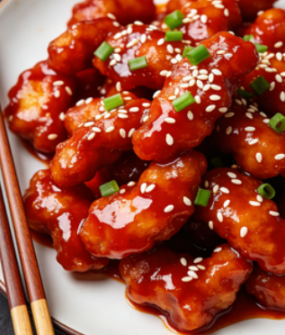
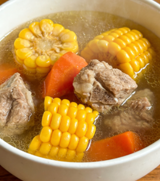
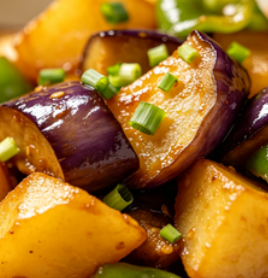

🍳
AI 私厨
智能食谱 RAG 问答系统
💬
对话问答
🔍
菜品检索
初始化中...



👨🍳 你好，我是你的 AI 私厨！
我可以帮你推荐菜品、查询食谱、提供做菜步骤指导。试试问我：
🥩 推荐肉菜
🍖 糖醋里脊做法
🍲 汤品推荐
🥦 家常素菜
🧃 夏日饮品
🍚 主食推荐
按 Enter 发送，Shift+Enter 换行
🍽️ 菜品图鉴
浏览各类菜品，点击查看详情或直接向 AI 提问
🍱
全部
🥩
荤菜
🥬
素菜
🍲
汤品
🍚
主食
🧃
饮品
×
🤖 问 AI 怎么做